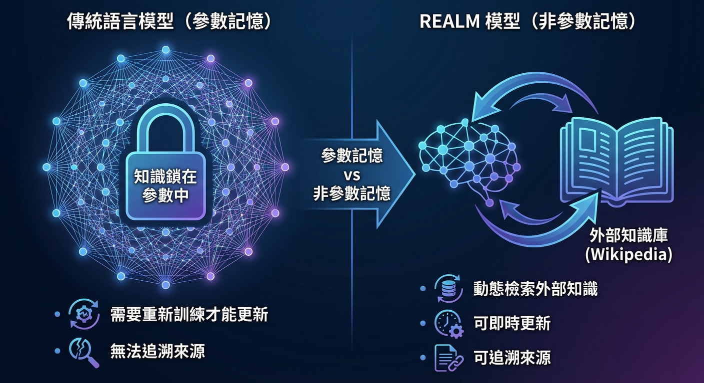

💡 一句話總結
REALM 是第一個在預訓練階段就整合知識檢索器的語言模型，
讓模型不只從參數中提取知識，還能從外部文檔中「查閱」資料。
📄 Abstract (摘要)
📄 論文原文
"Language model pre-training has been shown to capture a surprising amount of world knowledge, crucial for NLP tasks such as question answering. However, this knowledge is stored implicitly in the parameters of a neural network, requiring ever-larger networks to cover more facts. To capture knowledge in a more modular and interpretable way, we augment language model pre-training with a latent knowledge retriever, which allows the model to retrieve and attend over documents from a large corpus such as Wikipedia, used during pre-training, fine-tuning and inference."
翻譯：語言模型預訓練已被證明能捕捉驚人數量的世界知識，這對問答等 NLP 任務至關重要。然而，這些知識隱式地儲存在神經網路的參數中，需要越來越大的網路來涵蓋更多事實。為了以更模組化和可解釋的方式捕捉知識，我們用潛在知識檢索器增強語言模型預訓練，這允許模型從大型語料庫（如 Wikipedia）中檢索和關注文檔，在預訓練、微調和推理期間使用。
📄 論文原文（核心創新）
"For the first time, we show how to pre-train such a knowledge retriever in an unsupervised manner, using masked language modeling as the learning signal and backpropagating through a retrieval step that considers millions of documents. We demonstrate the effectiveness of Retrieval-Augmented Language Model pre-training (REALM) by fine-tuning on the challenging task of Open-domain Question Answering (Open-QA)."
翻譯：我們首次展示了如何以無監督方式預訓練這樣的知識檢索器，使用遮罩語言建模作為學習信號，並透過考慮數百萬文檔的檢索步驟進行反向傳播。我們透過在開放域問答（Open-QA）這個具有挑戰性的任務上進行微調，展示了檢索增強語言模型預訓練（REALM）的有效性。
🚀 核心創新
📐 為什麼 REALM 很重要？
在 REALM 之前，語言模型把所有知識都「背」在參數裡：
- 模型越大 → 知識越多 → 但成本也越高
- 知識更新 → 必須重新訓練整個模型
- 知識來源 → 無法追溯，像個「黑箱」
REALM 的突破：讓檢索器和語言模型一起訓練！
檢索器學會「找對的文檔」，語言模型學會「用好這些文檔」。

📊 參數記憶 vs 非參數記憶：REALM 的核心創新
💡 論文原始圖表
REALM 論文中的 Figure 1 展示了檢索增強語言模型的架構圖，包含：
- Neural Knowledge Retriever：使用 BERT 編碼器計算查詢與文檔的相似度
- Knowledge-Augmented Encoder：將檢索到的文檔與原始輸入拼接處理
- Masked Language Model：預訓練目標，通過檢索到的文檔提升預測準確度
📄 請參考 論文 PDF 第 2 頁 Figure 1
🔧 技術架構
兩大核心組件
1. Knowledge Retriever (知識檢索器)
- 輸入：查詢文本 x
- 輸出：從知識庫中檢索出相關文檔 z
- 使用 BERT 編碼器計算相似度
- 檢索是「可微分」的 → 可以用梯度下降訓練
2. Knowledge-Augmented Encoder (知識增強編碼器)
- 輸入：原始文本 x + 檢索到的文檔 z
- 將兩者拼接後用 Transformer 編碼
- 輸出：結合外部知識的表示
🎯 生活類比：開放式考試
傳統語言模型 = 閉卷考試
REALM = 開卷考試
- 可以帶參考書進考場
- 考試時可以翻書找答案
- 但要學會「怎麼快速找到對的頁面」
關鍵創新：REALM 不只學會「找書」，還在預訓練時就學會這個技能！
📚 訓練方法
🔄 可微分檢索的魔法
REALM 最大的技術挑戰是：如何讓檢索過程可以訓練？
解決方案：邊緣化 (Marginalization)
- 不是只選一個最相關的文檔
- 而是考慮「所有可能的文檔」，加權平均
- 權重 = 文檔的相關性機率
訓練目標：Masked Language Model
- 和 BERT 一樣：遮住一些詞，預測被遮住的詞
- 但在預測時，可以參考檢索到的文檔
- 如果檢索到的文檔有幫助 → 預測更準確 → 檢索器得到獎勵
📊 實驗結果
✅ Open-Domain QA 大幅領先
REALM 在三個開放域問答資料集上取得 SOTA：
| 資料集 |
之前最佳 |
REALM |
提升 |
| NaturalQuestions |
31.8% |
40.4% |
+8.6% |
| WebQuestions |
37.4% |
40.7% |
+3.3% |
| CuratedTrec |
28.2% |
46.8% |
+18.6% |
🔍 為什麼效果這麼好？
- 知識外置：不需要把所有知識塞進參數裡
- 可解釋性：可以看到模型查了哪些文檔
- 模組化：更新知識只需更新文檔庫，不需重訓模型
📜 歷史意義
🌟 REALM 開創了什麼？
- 第一個在預訓練階段整合檢索的語言模型
- 證明了檢索器可以端到端訓練
- 啟發了後來的 RAG、RETRO 等工作
- 奠定了「外部知識 + 語言模型」的研究方向
REALM 發表於 2020 年 2 月，比 RAG 原始論文早了 3 個月。
它證明了一個關鍵洞見：模型不需要記住所有東西，只需要知道去哪裡找。
🔄 REALM vs RAG
| 面向 |
REALM |
RAG (下一篇) |
| 發布時間 |
2020 年 2 月 |
2020 年 5 月 |
| 機構 |
Google Research |
Facebook AI (Meta) |
| 訓練目標 |
Masked LM |
Seq2Seq 生成 |
| 主要任務 |
Open-Domain QA |
知識密集型 NLP 任務 |
| 檢索器 |
BERT-based |
DPR (Dense Passage Retrieval) |
| 生成器 |
BERT Encoder |
BART (Seq2Seq) |
REALM 專注於理解任務 (Encoder)，RAG 擴展到生成任務 (Seq2Seq)。
兩者都是 RAG 技術的重要奠基者。